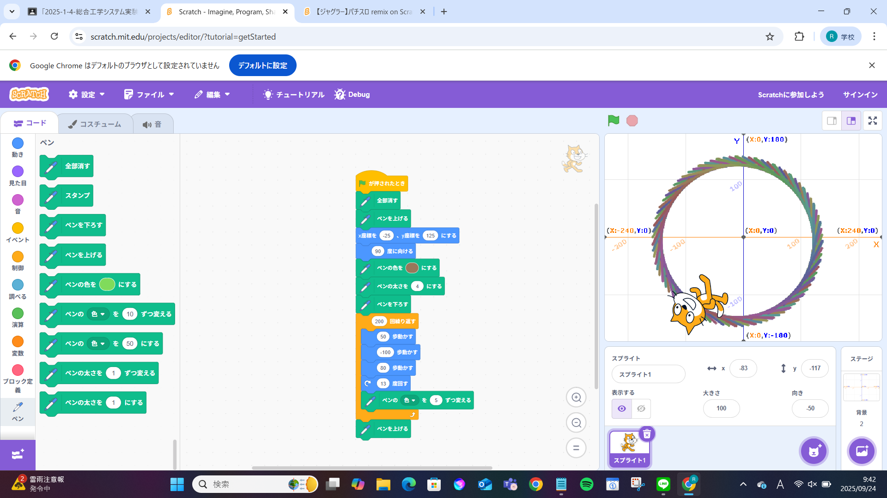
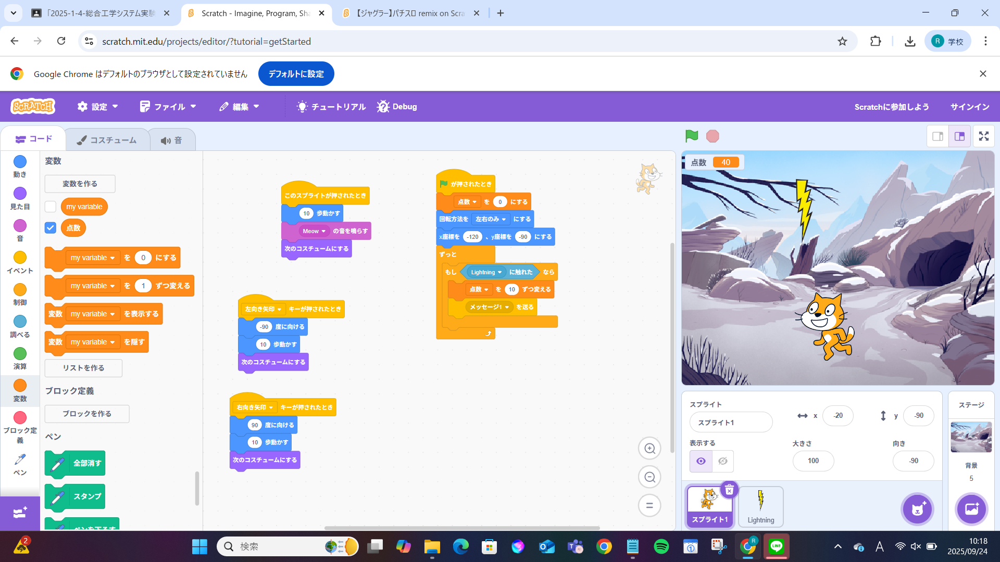

1週目のレポート ： 公大高専１年実習I-1
4b班22番 杉野英明
第1週目
1-1 サイエンスアート

1.内容
プログラミング（今回はscratch）を用いて、図形の作成を行った。単なる円だけでなく、座標や歩数を変えたり、ペンの太さや色合いを変えたりして様々な模様の円を作った。
2.感想
体験入学で一度学んだが、プログラミングで図形を作ったことがなかったため、新しい体験ができた。また、自分だけの図形を作ることもできた。これを通して、プログラミングの楽しさを知ることができたと思う。
1-2 ゲーム

1.内容
プログラミング（scratch）を用いて、猫を動かして落ちてくるものをとるゲームを作成した。座標を使って落ちてくるようにしたり、乱数を使って落ちるスピードがバラバラになるようにした。
2.感想
自分でゲームを作ったことがなかったから、難しいのかなと考えていた。だが、ブロックでプログラミングを行ったため、案外簡単だった。また、点数表示も作成したため、よりゲームらしくなって楽しかった。
1-3 ホームページ作成
私のホームページ
1.内容
githubを用いて、自分のホームページの作成を行った。作成とは言ったものの、テンプレートを書き換えて自分のホームページを作成した。自己紹介やタブの名称を変更してオリジナルのものにした。
2.感想
ブロックではなく、文字でデータを変更したりするのが初めての体験だったので、少し難しかった。また、これを通して、後々はこういうことがもっと簡単にできるようになりたいと思った。
各ページへのリンク
1週目のレポート
2週目のレポート
3週目のレポート
私のホームページ